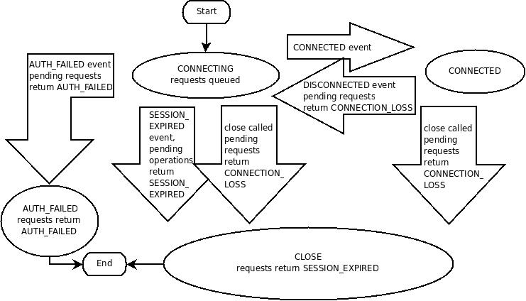

ZooKeeper Programmer's Guide
Developing Distributed Applications that use ZooKeeper
- Introduction
- The ZooKeeper Data Model
- ZooKeeper Sessions
- ZooKeeper Watches
- ZooKeeper access control using ACLs
- Pluggable ZooKeeper authentication
- Consistency Guarantees
- Bindings
- Building Blocks: A Guide to ZooKeeper Operations
- Gotchas: Common Problems and Troubleshooting
Introduction
This document is a guide for developers wishing to create distributed applications that take advantage of ZooKeeper's coordination services. It contains conceptual and practical information.
The first four sections of this guide present a higher level discussions of various ZooKeeper concepts. These are necessary both for an understanding of how ZooKeeper works as well how to work with it. It does not contain source code, but it does assume a familiarity with the problems associated with distributed computing. The sections in this first group are:
The next four sections provide practical programming information. These are:
- Building Blocks: A Guide to ZooKeeper Operations
- Bindings
- Gotchas: Common Problems and Troubleshooting
The book concludes with an appendix containing links to other useful, ZooKeeper-related information.
Most of the information in this document is written to be accessible as stand-alone reference material. However, before starting your first ZooKeeper application, you should probably at least read the chapters on the ZooKeeper Data Model and ZooKeeper Basic Operations.
The ZooKeeper Data Model
ZooKeeper has a hierarchal namespace, much like a distributed file system. The only difference is that each node in the namespace can have data associated with it as well as children. It is like having a file system that allows a file to also be a directory. Paths to nodes are always expressed as canonical, absolute, slash-separated paths; there are no relative reference. Any unicode character can be used in a path subject to the following constraints:
- The null character (\u0000) cannot be part of a path name. (This causes problems with the C binding.)
- The following characters can't be used because they don't display well, or render in confusing ways: \u0001 - \u001F and \u007F
- \u009F.
- The following characters are not allowed: \ud800 - uF8FF, \uFFF0 - uFFFF.
- The "." character can be used as part of another name, but "." and ".." cannot alone be used to indicate a node along a path, because ZooKeeper doesn't use relative paths. The following would be invalid: "/a/b/./c" or "/a/b/../c".
- The token "zookeeper" is reserved.
ZNodes
Every node in a ZooKeeper tree is referred to as a znode. Znodes maintain a stat structure that includes version numbers for data changes, acl changes. The stat structure also has timestamps. The version number, together with the timestamp, allows ZooKeeper to validate the cache and to coordinate updates. Each time a znode's data changes, the version number increases. For instance, whenever a client retrieves data, it also receives the version of the data. And when a client performs an update or a delete, it must supply the version of the data of the znode it is changing. If the version it supplies doesn't match the actual version of the data, the update will fail. (This behavior can be overridden.
Note
In distributed application engineering, the word node can refer to a generic host machine, a server, a member of an ensemble, a client process, etc. In the ZooKeeper documentation, znodes refer to the data nodes. Servers refers to machines that make up the ZooKeeper service; quorum peers refer to the servers that make up an ensemble; client refers to any host or process which uses a ZooKeeper service.
Znodes are the main entity that a programmer access. They have several characteristics that are worth mentioning here.
Watches
Clients can set watches on znodes. Changes to that znode trigger the watch and then clear the watch. When a watch triggers, ZooKeeper sends the client a notification. More information about watches can be found in the section ZooKeeper Watches.
Data Access
The data stored at each znode in a namespace is read and written atomically. Reads get all the data bytes associated with a znode and a write replaces all the data. Each node has an Access Control List (ACL) that restricts who can do what.
ZooKeeper was not designed to be a general database or large object store. Instead, it manages coordination data. This data can come in the form of configuration, status information, rendezvous, etc. A common property of the various forms of coordination data is that they are relatively small: measured in kilobytes. The ZooKeeper client and the server implementations have sanity checks to ensure that znodes have less than 1M of data, but the data should be much less than that on average. Operating on relatively large data sizes will cause some operations to take much more time than others and will affect the latencies of some operations because of the extra time needed to move more data over the network and onto storage media. If large data storage is needed, the usual pattern of dealing with such data is to store it on a bulk storage system, such as NFS or HDFS, and store pointers to the storage locations in ZooKeeper.
Ephemeral Nodes
ZooKeeper also has the notion of ephemeral nodes. These znodes exists as long as the session that created the znode is active. When the session ends the znode is deleted. Because of this behavior ephemeral znodes are not allowed to have children. The list of ephemerals for the session can be retrieved using getEphemerals() api.
getEphemerals()
Retrieves the list of ephemeral nodes created by the session for the given path. If the path is empty, it will list all the ephemeral nodes for the session. Use Case - A sample use case might be, if the list of ephemeral nodes for the session needs to be collected for duplicate data entry check and the nodes are created in a sequential manner so you do not know the name for duplicate check. In that case, getEphemerals() api could be used to get the list of nodes for the session. This might be a typical use case for service discovery.
Sequence Nodes -- Unique Naming
When creating a znode you can also request that ZooKeeper append a monotonically increasing counter to the end of path. This counter is unique to the parent znode. The counter has a format of %010d -- that is 10 digits with 0 (zero) padding (the counter is formatted in this way to simplify sorting), i.e. "
Container Nodes
Added in 3.6.0
ZooKeeper has the notion of container znodes. Container znodes are special purpose znodes useful for recipes such as leader, lock, etc. When the last child of a container is deleted, the container becomes a candidate to be deleted by the server at some point in the future.
Given this property, you should be prepared to get KeeperException.NoNodeException when creating children inside of container znodes. i.e. when creating child znodes inside of container znodes always check for KeeperException.NoNodeException and recreate the container znode when it occurs.
TTL Nodes
Added in 3.6.0
When creating PERSISTENT or PERSISTENT_SEQUENTIAL znodes, you can optionally set a TTL in milliseconds for the znode. If the znode is not modified within the TTL and has no children it will become a candidate to be deleted by the server at some point in the future.
Note: TTL Nodes must be enabled via System property as they are disabled by default. See the Administrator's Guide for details. If you attempt to create TTL Nodes without the proper System property set the server will throw KeeperException.UnimplementedException.
Time in ZooKeeper
ZooKeeper tracks time multiple ways:
- Zxid Every change to the ZooKeeper state receives a stamp in the form of a zxid (ZooKeeper Transaction Id). This exposes the total ordering of all changes to ZooKeeper. Each change will have a unique zxid and if zxid1 is smaller than zxid2 then zxid1 happened before zxid2.
- Version numbers Every change to a node will cause an increase to one of the version numbers of that node. The three version numbers are version (number of changes to the data of a znode), cversion (number of changes to the children of a znode), and aversion (number of changes to the ACL of a znode).
- Ticks When using multi-server ZooKeeper, servers use ticks to define timing of events such as status uploads, session timeouts, connection timeouts between peers, etc. The tick time is only indirectly exposed through the minimum session timeout (2 times the tick time); if a client requests a session timeout less than the minimum session timeout, the server will tell the client that the session timeout is actually the minimum session timeout.
- Real time ZooKeeper doesn't use real time, or clock time, at all except to put timestamps into the stat structure on znode creation and znode modification.
ZooKeeper Stat Structure
The Stat structure for each znode in ZooKeeper is made up of the following fields:
- czxid The zxid of the change that caused this znode to be created.
- mzxid The zxid of the change that last modified this znode.
- pzxid The zxid of the change that last modified children of this znode.
- ctime The time in milliseconds from epoch when this znode was created.
- mtime The time in milliseconds from epoch when this znode was last modified.
- version The number of changes to the data of this znode.
- cversion The number of changes to the children of this znode.
- aversion The number of changes to the ACL of this znode.
- ephemeralOwner The session id of the owner of this znode if the znode is an ephemeral node. If it is not an ephemeral node, it will be zero.
- dataLength The length of the data field of this znode.
- numChildren The number of children of this znode.
ZooKeeper Sessions
A ZooKeeper client establishes a session with the ZooKeeper service by creating a handle to the service using a language binding. Once created, the handle starts off in the CONNECTING state and the client library tries to connect to one of the servers that make up the ZooKeeper service at which point it switches to the CONNECTED state. During normal operation the client handle will be in one of these two states. If an unrecoverable error occurs, such as session expiration or authentication failure, or if the application explicitly closes the handle, the handle will move to the CLOSED state. The following figure shows the possible state transitions of a ZooKeeper client:

To create a client session the application code must provide a connection string containing a comma separated list of host:port pairs, each corresponding to a ZooKeeper server (e.g. "127.0.0.1:4545" or "127.0.0.1:3000,127.0.0.1:3001,127.0.0.1:3002"). The ZooKeeper client library will pick an arbitrary server and try to connect to it. If this connection fails, or if the client becomes disconnected from the server for any reason, the client will automatically try the next server in the list, until a connection is (re-)established.
Added in 3.2.0: An optional "chroot" suffix may also be appended to the connection string. This will run the client commands while interpreting all paths relative to this root (similar to the unix chroot command). If used the example would look like: "127.0.0.1:4545/app/a" or "127.0.0.1:3000,127.0.0.1:3001,127.0.0.1:3002/app/a" where the client would be rooted at "/app/a" and all paths would be relative to this root - ie getting/setting/etc... "/foo/bar" would result in operations being run on "/app/a/foo/bar" (from the server perspective). This feature is particularly useful in multi-tenant environments where each user of a particular ZooKeeper service could be rooted differently. This makes re-use much simpler as each user can code his/her application as if it were rooted at "/", while actual location (say /app/a) could be determined at deployment time.
When a client gets a handle to the ZooKeeper service, ZooKeeper creates a ZooKeeper session, represented as a 64-bit number, that it assigns to the client. If the client connects to a different ZooKeeper server, it will send the session id as a part of the connection handshake. As a security measure, the server creates a password for the session id that any ZooKeeper server can validate.The password is sent to the client with the session id when the client establishes the session. The client sends this password with the session id whenever it reestablishes the session with a new server.
One of the parameters to the ZooKeeper client library call to create a ZooKeeper session is the session timeout in milliseconds. The client sends a requested timeout, the server responds with the timeout that it can give the client. The current implementation requires that the timeout be a minimum of 2 times the tickTime (as set in the server configuration) and a maximum of 20 times the tickTime. The ZooKeeper client API allows access to the negotiated timeout.
When a client (session) becomes partitioned from the ZK serving cluster it will begin searching the list of servers that were specified during session creation. Eventually, when connectivity between the client and at least one of the servers is re-established, the session will either again transition to the "connected" state (if reconnected within the session timeout value) or it will transition to the "expired" state (if reconnected after the session timeout). It is not advisable to create a new session object (a new ZooKeeper.class or zookeeper handle in the c binding) for disconnection. The ZK client library will handle reconnect for you. In particular we have heuristics built into the client library to handle things like "herd effect", etc... Only create a new session when you are notified of session expiration (mandatory).
Session expiration is managed by the ZooKeeper cluster itself, not by the client. When the ZK client establishes a session with the cluster it provides a "timeout" value detailed above. This value is used by the cluster to determine when the client's session expires. Expirations happens when the cluster does not hear from the client within the specified session timeout period (i.e. no heartbeat). At session expiration the cluster will delete any/all ephemeral nodes owned by that session and immediately notify any/all connected clients of the change (anyone watching those znodes). At this point the client of the expired session is still disconnected from the cluster, it will not be notified of the session expiration until/unless it is able to re-establish a connection to the cluster. The client will stay in disconnected state until the TCP connection is re-established with the cluster, at which point the watcher of the expired session will receive the "session expired" notification.
Example state transitions for an expired session as seen by the expired session's watcher:
- 'connected' : session is established and client is communicating with cluster (client/server communication is operating properly)
- .... client is partitioned from the cluster
- 'disconnected' : client has lost connectivity with the cluster
- .... time elapses, after 'timeout' period the cluster expires the session, nothing is seen by client as it is disconnected from cluster
- .... time elapses, the client regains network level connectivity with the cluster
- 'expired' : eventually the client reconnects to the cluster, it is then notified of the expiration
Another parameter to the ZooKeeper session establishment call is the default watcher. Watchers are notified when any state change occurs in the client. For example if the client loses connectivity to the server the client will be notified, or if the client's session expires, etc... This watcher should consider the initial state to be disconnected (i.e. before any state changes events are sent to the watcher by the client lib). In the case of a new connection, the first event sent to the watcher is typically the session connection event.
The session is kept alive by requests sent by the client. If the session is idle for a period of time that would timeout the session, the client will send a PING request to keep the session alive. This PING request not only allows the ZooKeeper server to know that the client is still active, but it also allows the client to verify that its connection to the ZooKeeper server is still active. The timing of the PING is conservative enough to ensure reasonable time to detect a dead connection and reconnect to a new server.
Once a connection to the server is successfully established (connected) there are basically two cases where the client lib generates connectionloss (the result code in c binding, exception in Java -- see the API documentation for binding specific details) when either a synchronous or asynchronous operation is performed and one of the following holds:
- The application calls an operation on a session that is no longer alive/valid
- The ZooKeeper client disconnects from a server when there are pending operations to that server, i.e., there is a pending asynchronous call.
Added in 3.2.0 -- SessionMovedException. There is an internal exception that is generally not seen by clients called the SessionMovedException. This exception occurs because a request was received on a connection for a session which has been reestablished on a different server. The normal cause of this error is a client that sends a request to a server, but the network packet gets delayed, so the client times out and connects to a new server. When the delayed packet arrives at the first server, the old server detects that the session has moved, and closes the client connection. Clients normally do not see this error since they do not read from those old connections. (Old connections are usually closed.) One situation in which this condition can be seen is when two clients try to reestablish the same connection using a saved session id and password. One of the clients will reestablish the connection and the second client will be disconnected (causing the pair to attempt to re-establish its connection/session indefinitely).
Updating the list of servers. We allow a client to update the connection string by providing a new comma separated list of host:port pairs, each corresponding to a ZooKeeper server. The function invokes a probabilistic load-balancing algorithm which may cause the client to disconnect from its current host with the goal to achieve expected uniform number of connections per server in the new list. In case the current host to which the client is connected is not in the new list this call will always cause the connection to be dropped. Otherwise, the decision is based on whether the number of servers has increased or decreased and by how much.
For example, if the previous connection string contained 3 hosts and now the list contains these 3 hosts and 2 more hosts, 40% of clients connected to each of the 3 hosts will move to one of the new hosts in order to balance the load. The algorithm will cause the client to drop its connection to the current host to which it is connected with probability 0.4 and in this case cause the client to connect to one of the 2 new hosts, chosen at random.
Another example -- suppose we have 5 hosts and now update the list to remove 2 of the hosts, the clients connected to the 3 remaining hosts will stay connected, whereas all clients connected to the 2 removed hosts will need to move to one of the 3 hosts, chosen at random. If the connection is dropped, the client moves to a special mode where he chooses a new server to connect to using the probabilistic algorithm, and not just round robin.
In the first example, each client decides to disconnect with probability 0.4 but once the decision is made, it will try to connect to a random new server and only if it cannot connect to any of the new servers will it try to connect to the old ones. After finding a server, or trying all servers in the new list and failing to connect, the client moves back to the normal mode of operation where it picks an arbitrary server from the connectString and attempts to connect to it. If that fails, it will continue trying different random servers in round robin. (see above the algorithm used to initially choose a server)
Local session. Added in 3.5.0, mainly implemented by ZOOKEEPER-1147.
- Background: The creation and closing of sessions are costly in ZooKeeper because they need quorum confirmations, they become the bottleneck of a ZooKeeper ensemble when it needs to handle thousands of client connections. So after 3.5.0, we introduce a new type of session: local session which doesn't have a full functionality of a normal(global) session, this feature will be available by turning on localSessionsEnabled.
when localSessionsUpgradingEnabled is disable:
-
Local sessions cannot create ephemeral nodes
-
Once a local session is lost, users cannot re-establish it using the session-id/password, the session and its watches are gone for good. Note: Losing the tcp connection does not necessarily imply that the session is lost. If the connection can be reestablished with the same zk server before the session timeout then the client can continue (it simply cannot move to another server).
-
When a local session connects, the session info is only maintained on the zookeeper server that it is connected to. The leader is not aware of the creation of such a session and there is no state written to disk.
-
The pings, expiration and other session state maintenance are handled by the server which current session is connected to.
when localSessionsUpgradingEnabled is enable:
-
A local session can be upgraded to the global session automatically.
-
When a new session is created it is saved locally in a wrapped LocalSessionTracker. It can subsequently be upgraded to a global session as required (e.g. create ephemeral nodes). If an upgrade is requested the session is removed from local collections while keeping the same session ID.
-
Currently, Only the operation: create ephemeral node needs a session upgrade from local to global. The reason is that the creation of ephemeral node depends heavily on a global session. If local session can create ephemeral node without upgrading to global session, it will cause the data inconsistency between different nodes. The leader also needs to know about the lifespan of a session in order to clean up ephemeral nodes on close/expiry. This requires a global session as the local session is tied to its particular server.
-
A session can be both a local and global session during upgrade, but the operation of upgrade cannot be called concurrently by two thread.
-
ZooKeeperServer(Standalone) uses SessionTrackerImpl; LeaderZookeeper uses LeaderSessionTracker which holds SessionTrackerImpl(global) and LocalSessionTracker(if enable); FollowerZooKeeperServer and ObserverZooKeeperServer use LearnerSessionTracker which holds LocalSessionTracker. The UML Graph of Classes about session:
+----------------+ +--------------------+ +---------------------+ | | --> | | ----> | LocalSessionTracker | | SessionTracker | | SessionTrackerImpl | +---------------------+ | | | | +-----------------------+ | | | | +-------------------------> | LeaderSessionTracker | +----------------+ +--------------------+ | +-----------------------+ | | | | | | | +---------------------------+ +---------> | | | UpgradeableSessionTracker | | | | | ------------------------+ +---------------------------+ | | | v +-----------------------+ | LearnerSessionTracker | +-----------------------+ -
Q&A
- What's the reason for having the config option to disable local session upgrade?
- In a large deployment which wants to handle a very large number of clients, we know that clients connecting via the observers which is supposed to be local session only. So this is more like a safeguard against someone accidentally creates lots of ephemeral nodes and global sessions.
-
When is the session created?
- In the current implementation, it will try to create a local session when processing ConnectRequest and when createSession request reaches FinalRequestProcessor.
-
What happens if the create for session is sent at server A and the client disconnects to some other server B which ends up sending it again and then disconnects and connects back to server A?
- When a client reconnects to B, its sessionId won’t exist in B’s local session tracker. So B will send validation packet. If CreateSession issued by A is committed before validation packet arrive the client will be able to connect. Otherwise, the client will get session expired because the quorum hasn’t know about this session yet. If the client also tries to connect back to A again, the session is already removed from local session tracker. So A will need to send a validation packet to the leader. The outcome should be the same as B depending on the timing of the request.
ZooKeeper Watches
All of the read operations in ZooKeeper - getData(), getChildren(), and exists() - have the option of setting a watch as a side effect. Here is ZooKeeper's definition of a watch: a watch event is one-time trigger, sent to the client that set the watch, which occurs when the data for which the watch was set changes. There are three key points to consider in this definition of a watch:
- One-time trigger One watch event will be sent to the client when the data has changed. For example, if a client does a getData("/znode1", true) and later the data for /znode1 is changed or deleted, the client will get a watch event for /znode1. If /znode1 changes again, no watch event will be sent unless the client has done another read that sets a new watch.
- Sent to the client This implies that an event is on the way to the client, but may not reach the client before the successful return code to the change operation reaches the client that initiated the change. Watches are sent asynchronously to watchers. ZooKeeper provides an ordering guarantee: a client will never see a change for which it has set a watch until it first sees the watch event. Network delays or other factors may cause different clients to see watches and return codes from updates at different times. The key point is that everything seen by the different clients will have a consistent order.
- The data for which the watch was set This refers to the different ways a node can change. It helps to think of ZooKeeper as maintaining two lists of watches: data watches and child watches. getData() and exists() set data watches. getChildren() sets child watches. Alternatively, it may help to think of watches being set according to the kind of data returned. getData() and exists() return information about the data of the node, whereas getChildren() returns a list of children. Thus, setData() will trigger data watches for the znode being set (assuming the set is successful). A successful create() will trigger a data watch for the znode being created and a child watch for the parent znode. A successful delete() will trigger both a data watch and a child watch (since there can be no more children) for a znode being deleted as well as a child watch for the parent znode.
Watches are maintained locally at the ZooKeeper server to which the client is connected. This allows watches to be lightweight to set, maintain, and dispatch. When a client connects to a new server, the watch will be triggered for any session events. Watches will not be received while disconnected from a server. When a client reconnects, any previously registered watches will be reregistered and triggered if needed. In general this all occurs transparently. There is one case where a watch may be missed: a watch for the existence of a znode not yet created will be missed if the znode is created and deleted while disconnected.
New in 3.6.0: Clients can also set permanent, recursive watches on a znode that are not removed when triggered and that trigger for changes on the registered znode as well as any children znodes recursively.
Semantics of Watches
We can set watches with the three calls that read the state of ZooKeeper: exists, getData, and getChildren. The following list details the events that a watch can trigger and the calls that enable them:
- Created event: Enabled with a call to exists.
- Deleted event: Enabled with a call to exists, getData, and getChildren.
- Changed event: Enabled with a call to exists and getData.
- Child event: Enabled with a call to getChildren.
Persistent, Recursive Watches
New in 3.6.0: There is now a variation on the standard watch described above whereby you can set a watch that does not get removed when triggered. Additionally, these watches trigger the event types NodeCreated, NodeDeleted, and NodeDataChanged and, optionally, recursively for all znodes starting at the znode that the watch is registered for. Note that NodeChildrenChanged events are not triggered for persistent recursive watches as it would be redundant.
Persistent watches are set using the method addWatch(). The triggering semantics and guarantees (other than one-time triggering) are the same as standard watches. The only exception regarding events is that recursive persistent watchers never trigger child changed events as they are redundant. Persistent watches are removed using removeWatches() with watcher type WatcherType.Any.
Remove Watches
We can remove the watches registered on a znode with a call to removeWatches. Also, a ZooKeeper client can remove watches locally even if there is no server connection by setting the local flag to true. The following list details the events which will be triggered after the successful watch removal.
- Child Remove event: Watcher which was added with a call to getChildren.
- Data Remove event: Watcher which was added with a call to exists or getData.
- Persistent Remove event: Watcher which was added with a call to add a persistent watch.
What ZooKeeper Guarantees about Watches
With regard to watches, ZooKeeper maintains these guarantees:
-
Watches are ordered with respect to other events, other watches, and asynchronous replies. The ZooKeeper client libraries ensures that everything is dispatched in order.
-
A client will see a watch event for a znode it is watching before seeing the new data that corresponds to that znode.
-
The order of watch events from ZooKeeper corresponds to the order of the updates as seen by the ZooKeeper service.
Things to Remember about Watches
-
Standard watches are one time triggers; if you get a watch event and you want to get notified of future changes, you must set another watch.
-
Because standard watches are one time triggers and there is latency between getting the event and sending a new request to get a watch you cannot reliably see every change that happens to a node in ZooKeeper. Be prepared to handle the case where the znode changes multiple times between getting the event and setting the watch again. (You may not care, but at least realize it may happen.)
-
A watch object, or function/context pair, will only be triggered once for a given notification. For example, if the same watch object is registered for an exists and a getData call for the same file and that file is then deleted, the watch object would only be invoked once with the deletion notification for the file.
-
When you disconnect from a server (for example, when the server fails), you will not get any watches until the connection is reestablished. For this reason session events are sent to all outstanding watch handlers. Use session events to go into a safe mode: you will not be receiving events while disconnected, so your process should act conservatively in that mode.
ZooKeeper access control using ACLs
ZooKeeper uses ACLs to control access to its znodes (the data nodes of a ZooKeeper data tree). The ACL implementation is quite similar to UNIX file access permissions: it employs permission bits to allow/disallow various operations against a node and the scope to which the bits apply. Unlike standard UNIX permissions, a ZooKeeper node is not limited by the three standard scopes for user (owner of the file), group, and world (other). ZooKeeper does not have a notion of an owner of a znode. Instead, an ACL specifies sets of ids and permissions that are associated with those ids.
Note also that an ACL pertains only to a specific znode. In particular it does not apply to children. For example, if /app is only readable by ip:172.16.16.1 and /app/status is world readable, anyone will be able to read /app/status; ACLs are not recursive.
ZooKeeper supports pluggable authentication schemes. Ids are specified using the form scheme:expression, where scheme is the authentication scheme that the id corresponds to. The set of valid expressions are defined by the scheme. For example, ip:172.16.16.1 is an id for a host with the address 172.16.16.1 using the ip scheme, whereas digest:bob:password is an id for the user with the name of bob using the digest scheme.
When a client connects to ZooKeeper and authenticates itself, ZooKeeper associates all the ids that correspond to a client with the clients connection. These ids are checked against the ACLs of znodes when a client tries to access a node. ACLs are made up of pairs of (scheme:expression, perms). The format of the expression is specific to the scheme. For example, the pair (ip:19.22.0.0/16, READ) gives the READ permission to any clients with an IP address that starts with 19.22.
ACL Permissions
ZooKeeper supports the following permissions:
- CREATE: you can create a child node
- READ: you can get data from a node and list its children.
- WRITE: you can set data for a node
- DELETE: you can delete a child node
- ADMIN: you can set permissions
The CREATE and DELETE permissions have been broken out of the WRITE permission for finer grained access controls. The cases for CREATE and DELETE are the following:
You want A to be able to do a set on a ZooKeeper node, but not be able to CREATE or DELETE children.
CREATE without DELETE: clients create requests by creating ZooKeeper nodes in a parent directory. You want all clients to be able to add, but only request processor can delete. (This is kind of like the APPEND permission for files.)
Also, the ADMIN permission is there since ZooKeeper doesn’t have a notion of file owner. In some sense the ADMIN permission designates the entity as the owner. ZooKeeper doesn’t support the LOOKUP permission (execute permission bit on directories to allow you to LOOKUP even though you can't list the directory). Everyone implicitly has LOOKUP permission. This allows you to stat a node, but nothing more. (The problem is, if you want to call zoo_exists() on a node that doesn't exist, there is no permission to check.)
ADMIN permission also has a special role in terms of ACLs: in order to retrieve ACLs of a znode user has to have READ or ADMIN permission, but without ADMIN permission, digest hash values will be masked out.
As of versions 3.9.2 / 3.8.4 / 3.7.3 the exists() call will now verify ACLs on nodes that exist and the client must have READ permission otherwise 'Insufficient permission' error will be raised.
Builtin ACL Schemes
ZooKeeeper has the following built in schemes:
- world has a single id, anyone, that represents anyone.
- auth is a special scheme which ignores any provided expression and instead uses the current user, credentials, and scheme. Any expression (whether user like with SASL authentication or user:password like with DIGEST authentication) provided is ignored by the ZooKeeper server when persisting the ACL. However, the expression must still be provided in the ACL because the ACL must match the form scheme:expression:perms. This scheme is provided as a convenience as it is a common use-case for a user to create a znode and then restrict access to that znode to only that user. If there is no authenticated user, setting an ACL with the auth scheme will fail.
- digest uses a username:password string to generate MD5 hash which is then used as an ACL ID identity. Authentication is done by sending the username:password in clear text. When used in the ACL the expression will be the username:base64 encoded SHA1 password digest.
- ip uses the client host IP as an ACL ID identity. The ACL expression is of the form addr/bits where the most significant bits of addr are matched against the most significant bits of the client host IP.
- x509 uses the client X500 Principal as an ACL ID identity. The ACL expression is the exact X500 Principal name of a client. When using the secure port, clients are automatically authenticated and their auth info for the x509 scheme is set.
ZooKeeper C client API
The following constants are provided by the ZooKeeper C library:
- const int ZOO_PERM_READ; //can read node’s value and list its children
- const int ZOO_PERM_WRITE;// can set the node’s value
- const int ZOO_PERM_CREATE; //can create children
- const int ZOO_PERM_DELETE;// can delete children
- const int ZOO_PERM_ADMIN; //can execute set_acl()
- const int ZOO_PERM_ALL;// all of the above flags OR’d together
The following are the standard ACL IDs:
- struct Id ZOO_ANYONE_ID_UNSAFE; //(‘world’,’anyone’)
- struct Id ZOO_AUTH_IDS;// (‘auth’,’’)
ZOO_AUTH_IDS empty identity string should be interpreted as “the identity of the creator”.
ZooKeeper client comes with three standard ACLs:
- struct ACL_vector ZOO_OPEN_ACL_UNSAFE; //(ZOO_PERM_ALL,ZOO_ANYONE_ID_UNSAFE)
- struct ACL_vector ZOO_READ_ACL_UNSAFE;// (ZOO_PERM_READ, ZOO_ANYONE_ID_UNSAFE)
- struct ACL_vector ZOO_CREATOR_ALL_ACL; //(ZOO_PERM_ALL,ZOO_AUTH_IDS)
The ZOO_OPEN_ACL_UNSAFE is completely open free for all ACL: any application can execute any operation on the node and can create, list and delete its children. The ZOO_READ_ACL_UNSAFE is read-only access for any application. CREATE_ALL_ACL grants all permissions to the creator of the node. The creator must have been authenticated by the server (for example, using “digest” scheme) before it can create nodes with this ACL.
The following ZooKeeper operations deal with ACLs:
- int zoo_add_auth (zhandle_t *zh,const char* scheme,const char* cert, int certLen, void_completion_t completion, const void *data);
The application uses the zoo_add_auth function to authenticate itself to the server. The function can be called multiple times if the application wants to authenticate using different schemes and/or identities.
- int zoo_create (zhandle_t *zh, const char *path, const char *value,int valuelen, const struct ACL_vector *acl, int flags,char *realpath, int max_realpath_len);
zoo_create(...) operation creates a new node. The acl parameter is a list of ACLs associated with the node. The parent node must have the CREATE permission bit set.
- int zoo_get_acl (zhandle_t *zh, const char *path,struct ACL_vector *acl, struct Stat *stat);
This operation returns a node’s ACL info. The node must have READ or ADMIN permission set. Without ADMIN permission, the digest hash values will be masked out.
- int zoo_set_acl (zhandle_t *zh, const char *path, int version,const struct ACL_vector *acl);
This function replaces node’s ACL list with a new one. The node must have the ADMIN permission set.
Here is a sample code that makes use of the above APIs to authenticate itself using the “foo” scheme and create an ephemeral node “/xyz” with create-only permissions.
Note
This is a very simple example which is intended to show how to interact with ZooKeeper ACLs specifically. See .../trunk/zookeeper-client/zookeeper-client-c/src/cli.c for an example of a C client implementation
#include <string.h>
#include <errno.h>
#include "zookeeper.h"
static zhandle_t *zh;
/**
* In this example this method gets the cert for your
* environment -- you must provide
*/
char *foo_get_cert_once(char* id) { return 0; }
/** Watcher function -- empty for this example, not something you should
* do in real code */
void watcher(zhandle_t *zzh, int type, int state, const char *path,
void *watcherCtx) {}
int main(int argc, char argv) {
char buffer[512];
char p[2048];
char *cert=0;
char appId[64];
strcpy(appId, "example.foo_test");
cert = foo_get_cert_once(appId);
if(cert!=0) {
fprintf(stderr,
"Certificate for appid [%s] is [%s]\n",appId,cert);
strncpy(p,cert, sizeof(p)-1);
free(cert);
} else {
fprintf(stderr, "Certificate for appid [%s] not found\n",appId);
strcpy(p, "dummy");
}
zoo_set_debug_level(ZOO_LOG_LEVEL_DEBUG);
zh = zookeeper_init("localhost:3181", watcher, 10000, 0, 0, 0);
if (!zh) {
return errno;
}
if(zoo_add_auth(zh,"foo",p,strlen(p),0,0)!=ZOK)
return 2;
struct ACL CREATE_ONLY_ACL[] = {{ZOO_PERM_CREATE, ZOO_AUTH_IDS}};
struct ACL_vector CREATE_ONLY = {1, CREATE_ONLY_ACL};
int rc = zoo_create(zh,"/xyz","value", 5, &CREATE_ONLY, ZOO_EPHEMERAL,
buffer, sizeof(buffer)-1);
/** this operation will fail with a ZNOAUTH error */
int buflen= sizeof(buffer);
struct Stat stat;
rc = zoo_get(zh, "/xyz", 0, buffer, &buflen, &stat);
if (rc) {
fprintf(stderr, "Error %d for %s\n", rc, __LINE__);
}
zookeeper_close(zh);
return 0;
}
Pluggable ZooKeeper authentication
ZooKeeper runs in a variety of different environments with various different authentication schemes, so it has a completely pluggable authentication framework. Even the builtin authentication schemes use the pluggable authentication framework.
To understand how the authentication framework works, first you must understand the two main authentication operations. The framework first must authenticate the client. This is usually done as soon as the client connects to a server and consists of validating information sent from or gathered about a client and associating it with the connection. The second operation handled by the framework is finding the entries in an ACL that correspond to client. ACL entries are <idspec, permissions> pairs. The idspec may be a simple string match against the authentication information associated with the connection or it may be a expression that is evaluated against that information. It is up to the implementation of the authentication plugin to do the match. Here is the interface that an authentication plugin must implement:
public interface AuthenticationProvider {
String getScheme();
KeeperException.Code handleAuthentication(ServerCnxn cnxn, byte authData[]);
boolean isValid(String id);
boolean matches(String id, String aclExpr);
boolean isAuthenticated();
}
The first method getScheme returns the string that identifies the plugin. Because we support multiple methods of authentication, an authentication credential or an idspec will always be prefixed with scheme:. The ZooKeeper server uses the scheme returned by the authentication plugin to determine which ids the scheme applies to.
handleAuthentication is called when a client sends authentication information to be associated with a connection. The client specifies the scheme to which the information corresponds. The ZooKeeper server passes the information to the authentication plugin whose getScheme matches the scheme passed by the client. The implementor of handleAuthentication will usually return an error if it determines that the information is bad, or it will associate information with the connection using cnxn.getAuthInfo().add(new Id(getScheme(), data)).
The authentication plugin is involved in both setting and using ACLs. When an ACL is set for a znode, the ZooKeeper server will pass the id part of the entry to the isValid(String id) method. It is up to the plugin to verify that the id has a correct form. For example, ip:172.16.0.0/16 is a valid id, but ip:host.com is not. If the new ACL includes an "auth" entry, isAuthenticated is used to see if the authentication information for this scheme that is associated with the connection should be added to the ACL. Some schemes should not be included in auth. For example, the IP address of the client is not considered as an id that should be added to the ACL if auth is specified.
ZooKeeper invokes matches(String id, String aclExpr) when checking an ACL. It needs to match authentication information of the client against the relevant ACL entries. To find the entries which apply to the client, the ZooKeeper server will find the scheme of each entry and if there is authentication information from that client for that scheme, matches(String id, String aclExpr) will be called with id set to the authentication information that was previously added to the connection by handleAuthentication and aclExpr set to the id of the ACL entry. The authentication plugin uses its own logic and matching scheme to determine if id is included in aclExpr.
There are two built in authentication plugins: ip and digest. Additional plugins can adding using system properties. At startup the ZooKeeper server will look for system properties that start with "zookeeper.authProvider." and interpret the value of those properties as the class name of an authentication plugin. These properties can be set using the -Dzookeeeper.authProvider.X=com.f.MyAuth or adding entries such as the following in the server configuration file:
authProvider.1=com.f.MyAuth
authProvider.2=com.f.MyAuth2
Care should be taking to ensure that the suffix on the property is unique. If there are duplicates such as -Dzookeeeper.authProvider.X=com.f.MyAuth -Dzookeeper.authProvider.X=com.f.MyAuth2, only one will be used. Also all servers must have the same plugins defined, otherwise clients using the authentication schemes provided by the plugins will have problems connecting to some servers.
Added in 3.6.0: An alternate abstraction is available for pluggable authentication. It provides additional arguments.
public abstract class ServerAuthenticationProvider implements AuthenticationProvider {
public abstract KeeperException.Code handleAuthentication(ServerObjs serverObjs, byte authData[]);
public abstract boolean matches(ServerObjs serverObjs, MatchValues matchValues);
}
Instead of implementing AuthenticationProvider you extend ServerAuthenticationProvider. Your handleAuthentication() and matches() methods will then receive the additional parameters (via ServerObjs and MatchValues).
- ZooKeeperServer The ZooKeeperServer instance
- ServerCnxn The current connection
- path The ZNode path being operated on (or null if not used)
- perm The operation value or 0
- setAcls When the setAcl() method is being operated on, the list of ACLs that are being set
Consistency Guarantees
ZooKeeper is a high performance, scalable service. Both reads and write operations are designed to be fast, though reads are faster than writes. The reason for this is that in the case of reads, ZooKeeper can serve older data, which in turn is due to ZooKeeper's consistency guarantees:
-
Sequential Consistency : Updates from a client will be applied in the order that they were sent.
-
Atomicity : Updates either succeed or fail -- there are no partial results.
-
Single System Image : A client will see the same view of the service regardless of the server that it connects to. i.e., a client will never see an older view of the system even if the client fails over to a different server with the same session.
-
Reliability : Once an update has been applied, it will persist from that time forward until a client overwrites the update. This guarantee has two corollaries:
- If a client gets a successful return code, the update will have been applied. On some failures (communication errors, timeouts, etc) the client will not know if the update has applied or not. We take steps to minimize the failures, but the guarantee is only present with successful return codes. (This is called the monotonicity condition in Paxos.)
- Any updates that are seen by the client, through a read request or successful update, will never be rolled back when recovering from server failures.
-
Timeliness : The clients view of the system is guaranteed to be up-to-date within a certain time bound (on the order of tens of seconds). Either system changes will be seen by a client within this bound, or the client will detect a service outage.
Using these consistency guarantees it is easy to build higher level functions such as leader election, barriers, queues, and read/write revocable locks solely at the ZooKeeper client (no additions needed to ZooKeeper). See Recipes and Solutions for more details.
Note
Sometimes developers mistakenly assume one other guarantee that ZooKeeper does not in fact make. This is: * Simultaneously Consistent Cross-Client Views* : ZooKeeper does not guarantee that at every instance in time, two different clients will have identical views of ZooKeeper data. Due to factors like network delays, one client may perform an update before another client gets notified of the change. Consider the scenario of two clients, A and B. If client A sets the value of a znode /a from 0 to 1, then tells client B to read /a, client B may read the old value of 0, depending on which server it is connected to. If it is important that Client A and Client B read the same value, Client B should call the sync() method from the ZooKeeper API method before it performs its read. So, ZooKeeper by itself doesn't guarantee that changes occur synchronously across all servers, but ZooKeeper primitives can be used to construct higher level functions that provide useful client synchronization. (For more information, see the ZooKeeper Recipes.
Bindings
The ZooKeeper client libraries come in two languages: Java and C. The following sections describe these.
Java Binding
There are two packages that make up the ZooKeeper Java binding: org.apache.zookeeper and org.apache.zookeeper.data. The rest of the packages that make up ZooKeeper are used internally or are part of the server implementation. The org.apache.zookeeper.data package is made up of generated classes that are used simply as containers.
The main class used by a ZooKeeper Java client is the ZooKeeper class. Its two constructors differ only by an optional session id and password. ZooKeeper supports session recovery across instances of a process. A Java program may save its session id and password to stable storage, restart, and recover the session that was used by the earlier instance of the program.
When a ZooKeeper object is created, two threads are created as well: an IO thread and an event thread. All IO happens on the IO thread (using Java NIO). All event callbacks happen on the event thread. Session maintenance such as reconnecting to ZooKeeper servers and maintaining heartbeat is done on the IO thread. Responses for synchronous methods are also processed in the IO thread. All responses to asynchronous methods and watch events are processed on the event thread. There are a few things to notice that result from this design:
- All completions for asynchronous calls and watcher callbacks will be made in order, one at a time. The caller can do any processing they wish, but no other callbacks will be processed during that time.
- Callbacks do not block the processing of the IO thread or the processing of the synchronous calls.
- Synchronous calls may not return in the correct order. For example, assume a client does the following processing: issues an asynchronous read of node /a with watch set to true, and then in the completion callback of the read it does a synchronous read of /a. (Maybe not good practice, but not illegal either, and it makes for a simple example.) Note that if there is a change to /a between the asynchronous read and the synchronous read, the client library will receive the watch event saying /a changed before the response for the synchronous read, but because of the completion callback blocking the event queue, the synchronous read will return with the new value of /a before the watch event is processed.
Finally, the rules associated with shutdown are straightforward: once a ZooKeeper object is closed or receives a fatal event (SESSION_EXPIRED and AUTH_FAILED), the ZooKeeper object becomes invalid. On a close, the two threads shut down and any further access on zookeeper handle is undefined behavior and should be avoided.
Client Configuration Parameters
The following list contains configuration properties for the Java client. You can set any of these properties using Java system properties. For server properties, please check the Server configuration section of the Admin Guide. The ZooKeeper Wiki also has useful pages about ZooKeeper SSL support, and SASL authentication for ZooKeeper.
-
zookeeper.sasl.client : Set the value to false to disable SASL authentication. Default is true.
-
zookeeper.sasl.clientconfig : Specifies the context key in the JAAS login file. Default is "Client".
-
zookeeper.server.principal : Specifies the server principal to be used by the client for authentication, while connecting to the zookeeper server, when Kerberos authentication is enabled. If this configuration is provided, then the ZooKeeper client will NOT USE any of the following parameters to determine the server principal: zookeeper.sasl.client.username, zookeeper.sasl.client.canonicalize.hostname, zookeeper.server.realm Note: this config parameter is working only for ZooKeeper 3.5.7+, 3.6.0+
-
zookeeper.sasl.client.username : Traditionally, a principal is divided into three parts: the primary, the instance, and the realm. The format of a typical Kerberos V5 principal is primary/instance@REALM. zookeeper.sasl.client.username specifies the primary part of the server principal. Default is "zookeeper". Instance part is derived from the server IP. Finally server's principal is username/IP@realm, where username is the value of zookeeper.sasl.client.username, IP is the server IP, and realm is the value of zookeeper.server.realm.
-
zookeeper.sasl.client.canonicalize.hostname : Expecting the zookeeper.server.principal parameter is not provided, the ZooKeeper client will try to determine the 'instance' (host) part of the ZooKeeper server principal. First it takes the hostname provided as the ZooKeeper server connection string. Then it tries to 'canonicalize' the address by getting the fully qualified domain name belonging to the address. You can disable this 'canonicalization' by setting: zookeeper.sasl.client.canonicalize.hostname=false
-
zookeeper.server.realm : Realm part of the server principal. By default it is the client principal realm.
-
zookeeper.disableAutoWatchReset : This switch controls whether automatic watch resetting is enabled. Clients automatically reset watches during session reconnect by default, this option allows the client to turn off this behavior by setting zookeeper.disableAutoWatchReset to true.
-
zookeeper.client.secure : New in 3.5.5: If you want to connect to the server secure client port, you need to set this property to true on the client. This will connect to server using SSL with specified credentials. Note that it requires the Netty client.
-
zookeeper.clientCnxnSocket : Specifies which ClientCnxnSocket to be used. Possible values are org.apache.zookeeper.ClientCnxnSocketNIO and org.apache.zookeeper.ClientCnxnSocketNetty . Default is org.apache.zookeeper.ClientCnxnSocketNIO . If you want to connect to server's secure client port, you need to set this property to org.apache.zookeeper.ClientCnxnSocketNetty on client.
-
zookeeper.ssl.keyStore.location and zookeeper.ssl.keyStore.password : New in 3.5.5: Specifies the file path to a JKS containing the local credentials to be used for SSL connections, and the password to unlock the file.
-
zookeeper.ssl.keyStore.passwordPath : New in 3.8.0: Specifies the file path which contains the keystore password
-
zookeeper.ssl.trustStore.location and zookeeper.ssl.trustStore.password : New in 3.5.5: Specifies the file path to a JKS containing the remote credentials to be used for SSL connections, and the password to unlock the file.
-
zookeeper.ssl.trustStore.passwordPath : New in 3.8.0: Specifies the file path which contains the truststore password
-
zookeeper.ssl.keyStore.type and zookeeper.ssl.trustStore.type: New in 3.5.5: Specifies the file format of keys/trust store files used to establish TLS connection to the ZooKeeper server. Values: JKS, PEM, PKCS12 or null (detect by filename). Default: null. New in 3.6.3, 3.7.0: The format BCFKS was added.
-
jute.maxbuffer : In the client side, it specifies the maximum size of the incoming data from the server. The default is 0xfffff(1048575) bytes, or just under 1M. This is really a sanity check. The ZooKeeper server is designed to store and send data on the order of kilobytes. If incoming data length is more than this value, an IOException is raised. This value of client side should keep same with the server side(Setting System.setProperty("jute.maxbuffer", "xxxx") in the client side will work), otherwise problems will arise.
-
zookeeper.kinit : Specifies path to kinit binary. Default is "/usr/bin/kinit".
C Binding
The C binding has a single-threaded and multi-threaded library. The multi-threaded library is easiest to use and is most similar to the Java API. This library will create an IO thread and an event dispatch thread for handling connection maintenance and callbacks. The single-threaded library allows ZooKeeper to be used in event driven applications by exposing the event loop used in the multi-threaded library.
The package includes two shared libraries: zookeeper_st and zookeeper_mt. The former only provides the asynchronous APIs and callbacks for integrating into the application's event loop. The only reason this library exists is to support the platforms were a pthread library is not available or is unstable (i.e. FreeBSD 4.x). In all other cases, application developers should link with zookeeper_mt, as it includes support for both Sync and Async API.
Installation
If you're building the client from a check-out from the Apache repository, follow the steps outlined below. If you're building from a project source package downloaded from apache, skip to step 3.
- Run
ant compile_jutefrom the ZooKeeper top level directory (.../trunk). This will create a directory named "generated" under .../trunk/zookeeper-client/zookeeper-client-c. - Change directory to the*.../trunk/zookeeper-client/zookeeper-client-c* and run
autoreconf -ifto bootstrap autoconf, automake and libtool. Make sure you have autoconf version 2.59 or greater installed. Skip to step4. - If you are building from a project source package, unzip/untar the source tarball and cd to the* zookeeper-x.x.x/zookeeper-client/zookeeper-client-c* directory.
- Run
./configure <your-options>to generate the makefile. Here are some of options the configure utility supports that can be useful in this step:
--enable-debugEnables optimization and enables debug info compiler options. (Disabled by default.)--without-syncapiDisables Sync API support; zookeeper_mt library won't be built. (Enabled by default.)--disable-staticDo not build static libraries. (Enabled by default.)--disable-sharedDo not build shared libraries. (Enabled by default.)
Note
See INSTALL for general information about running configure. 1. Run
makeormake installto build the libraries and install them. 1. To generate doxygen documentation for the ZooKeeper API, runmake doxygen-doc. All documentation will be placed in a new subfolder named docs. By default, this command only generates HTML. For information on other document formats, run./configure --help
Building Your Own C Client
In order to be able to use the ZooKeeper C API in your application you have to remember to
- Include ZooKeeper header:
#include <zookeeper/zookeeper.h> - If you are building a multithreaded client, compile with
-DTHREADEDcompiler flag to enable the multi-threaded version of the library, and then link against the zookeeper_mt library. If you are building a single-threaded client, do not compile with-DTHREADED, and be sure to link against the_zookeeper_st_library.
Note
See .../trunk/zookeeper-client/zookeeper-client-c/src/cli.c for an example of a C client implementation
Building Blocks: A Guide to ZooKeeper Operations
This section surveys all the operations a developer can perform against a ZooKeeper server. It is lower level information than the earlier concepts chapters in this manual, but higher level than the ZooKeeper API Reference. It covers these topics:
Handling Errors
Both the Java and C client bindings may report errors. The Java client binding does so by throwing KeeperException, calling code() on the exception will return the specific error code. The C client binding returns an error code as defined in the enum ZOO_ERRORS. API callbacks indicate result code for both language bindings. See the API documentation (javadoc for Java, doxygen for C) for full details on the possible errors and their meaning.
Connecting to ZooKeeper
Before we begin, you will have to set up a running Zookeeper server so that we can start developing the client. For C client bindings, we will be using the multithreaded library(zookeeper_mt) with a simple example written in C. To establish a connection with Zookeeper server, we make use of C API - zookeeper_init with the following signature:
int zookeeper_init(const char *host, watcher_fn fn, int recv_timeout, const clientid_t *clientid, void *context, int flags);
-
*host : Connection string to zookeeper server in the format of host:port. If there are multiple servers, use comma as separator after specifying the host:port pairs. Eg: "127.0.0.1:2181,127.0.0.1:3001,127.0.0.1:3002"
-
fn : Watcher function to process events when a notification is triggered.
-
recv_timeout : Session expiration time in milliseconds.
-
*clientid : We can specify 0 for a new session. If a session has already establish previously, we could provide that client ID and it would reconnect to that previous session.
-
*context : Context object that can be associated with the zkhandle_t handler. If it is not used, we can set it to 0.
-
flags : In an initiation, we can leave it for 0.
We will demonstrate client that outputs "Connected to Zookeeper" after successful connection or an error message otherwise. Let's call the following code zkClient.cc :
#include <stdio.h>
#include <zookeeper/zookeeper.h>
#include <errno.h>
using namespace std;
// Keeping track of the connection state
static int connected = 0;
static int expired = 0;
// *zkHandler handles the connection with Zookeeper
static zhandle_t *zkHandler;
// watcher function would process events
void watcher(zhandle_t *zkH, int type, int state, const char *path, void *watcherCtx)
{
if (type == ZOO_SESSION_EVENT) {
// state refers to states of zookeeper connection.
// To keep it simple, we would demonstrate these 3: ZOO_EXPIRED_SESSION_STATE, ZOO_CONNECTED_STATE, ZOO_NOTCONNECTED_STATE
// If you are using ACL, you should be aware of an authentication failure state - ZOO_AUTH_FAILED_STATE
if (state == ZOO_CONNECTED_STATE) {
connected = 1;
} else if (state == ZOO_NOTCONNECTED_STATE ) {
connected = 0;
} else if (state == ZOO_EXPIRED_SESSION_STATE) {
expired = 1;
connected = 0;
zookeeper_close(zkH);
}
}
}
int main(){
zoo_set_debug_level(ZOO_LOG_LEVEL_DEBUG);
// zookeeper_init returns the handler upon a successful connection, null otherwise
zkHandler = zookeeper_init("localhost:2181", watcher, 10000, 0, 0, 0);
if (!zkHandler) {
return errno;
}else{
printf("Connection established with Zookeeper. \n");
}
// Close Zookeeper connection
zookeeper_close(zkHandler);
return 0;
}
Compile the code with the multithreaded library mentioned before.
> g++ -Iinclude/ zkClient.cpp -lzookeeper_mt -o Client
Run the client.
> ./Client
From the output, you should see "Connected to Zookeeper" along with Zookeeper's DEBUG messages if the connection is successful.
Gotchas: Common Problems and Troubleshooting
So now you know ZooKeeper. It's fast, simple, your application works, but wait ... something's wrong. Here are some pitfalls that ZooKeeper users fall into:
- If you are using watches, you must look for the connected watch event. When a ZooKeeper client disconnects from a server, you will not receive notification of changes until reconnected. If you are watching for a znode to come into existence, you will miss the event if the znode is created and deleted while you are disconnected.
- You must test ZooKeeper server failures. The ZooKeeper service can survive failures as long as a majority of servers are active. The question to ask is: can your application handle it? In the real world a client's connection to ZooKeeper can break. (ZooKeeper server failures and network partitions are common reasons for connection loss.) The ZooKeeper client library takes care of recovering your connection and letting you know what happened, but you must make sure that you recover your state and any outstanding requests that failed. Find out if you got it right in the test lab, not in production - test with a ZooKeeper service made up of a several of servers and subject them to reboots.
- The list of ZooKeeper servers used by the client must match the list of ZooKeeper servers that each ZooKeeper server has. Things can work, although not optimally, if the client list is a subset of the real list of ZooKeeper servers, but not if the client lists ZooKeeper servers not in the ZooKeeper cluster.
- Be careful where you put that transaction log. The most performance-critical part of ZooKeeper is the transaction log. ZooKeeper must sync transactions to media before it returns a response. A dedicated transaction log device is key to consistent good performance. Putting the log on a busy device will adversely effect performance. If you only have one storage device, put trace files on NFS and increase the snapshotCount; it doesn't eliminate the problem, but it can mitigate it.
- Set your Java max heap size correctly. It is very important to avoid swapping. Going to disk unnecessarily will almost certainly degrade your performance unacceptably. Remember, in ZooKeeper, everything is ordered, so if one request hits the disk, all other queued requests hit the disk. To avoid swapping, try to set the heapsize to the amount of physical memory you have, minus the amount needed by the OS and cache. The best way to determine an optimal heap size for your configurations is to run load tests. If for some reason you can't, be conservative in your estimates and choose a number well below the limit that would cause your machine to swap. For example, on a 4G machine, a 3G heap is a conservative estimate to start with.
Links to Other Information
Outside the formal documentation, there're several other sources of information for ZooKeeper developers.
-
API Reference : The complete reference to the ZooKeeper API
-
ZooKeeper Talk at the Hadoop Summit 2008 : A video introduction to ZooKeeper, by Benjamin Reed of Yahoo! Research
-
Barrier and Queue Tutorial : The excellent Java tutorial by Flavio Junqueira, implementing simple barriers and producer-consumer queues using ZooKeeper.
-
ZooKeeper - A Reliable, Scalable Distributed Coordination System : An article by Todd Hoff (07/15/2008)
-
ZooKeeper Recipes : Pseudo-level discussion of the implementation of various synchronization solutions with ZooKeeper: Event Handles, Queues, Locks, and Two-phase Commits.